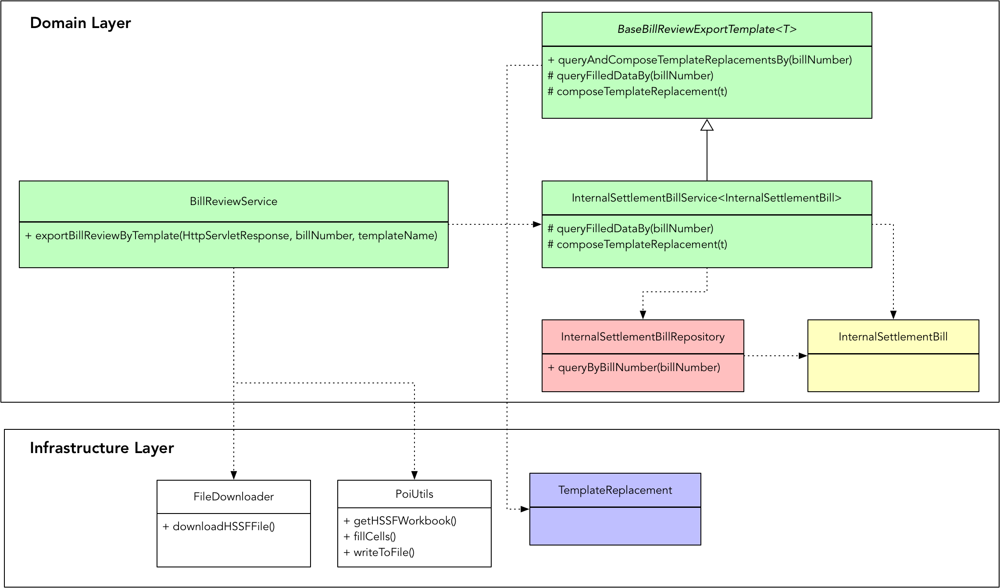
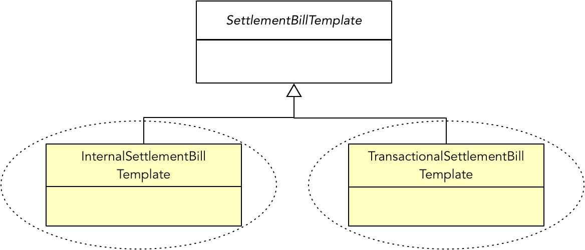

- 001 「战略篇」访谈 DDD 和微服务是什么关系？.md.html
- 002 「战略篇」开篇词：领域驱动设计，重焕青春的设计经典.md.html
- 003 领域驱动设计概览.md.html
- 004 深入分析软件的复杂度.md.html
- 005 控制软件复杂度的原则.md.html
- 006 领域驱动设计对软件复杂度的应对（上）.md.html
- 007 领域驱动设计对软件复杂度的应对（下）.md.html
- 008 软件开发团队的沟通与协作.md.html
- 009 运用领域场景分析提炼领域知识（上）.md.html
- 010 运用领域场景分析提炼领域知识（下）.md.html
- 011 建立统一语言.md.html
- 012 理解限界上下文.md.html
- 013 限界上下文的控制力（上）.md.html
- 014 限界上下文的控制力（下）.md.html
- 015 识别限界上下文（上）.md.html
- 016 识别限界上下文（下）.md.html
- 017 理解上下文映射.md.html
- 018 上下文映射的团队协作模式.md.html
- 019 上下文映射的通信集成模式.md.html
- 020 辨别限界上下文的协作关系（上）.md.html
- 021 辨别限界上下文的协作关系（下）.md.html
- 022 认识分层架构.md.html
- 023 分层架构的演化.md.html
- 024 领域驱动架构的演进.md.html
- 025 案例 层次的职责与协作关系（图文篇）.md.html
- 026 限界上下文与架构.md.html
- 027 限界上下文对架构的影响.md.html
- 028 领域驱动设计的代码模型.md.html
- 029 代码模型的架构决策.md.html
- 030 实践 先启阶段的需求分析.md.html
- 031 实践 先启阶段的领域场景分析（上）.md.html
- 032 实践 先启阶段的领域场景分析（下）.md.html
- 033 实践 识别限界上下文.md.html
- 034 实践 确定限界上下文的协作关系.md.html
- 035 实践 EAS 的整体架构.md.html
- 036 「战术篇」访谈：DDD 能帮开发团队提高设计水平吗？.md.html
- 037 「战术篇」开篇词：领域驱动设计的不确定性.md.html
- 038 什么是模型.md.html
- 039 数据分析模型.md.html
- 040 数据设计模型.md.html
- 041 数据模型与对象模型.md.html
- 042 数据实现模型.md.html
- 043 案例 培训管理系统.md.html
- 044 服务资源模型.md.html
- 045 服务行为模型.md.html
- 046 服务设计模型.md.html
- 047 领域模型驱动设计.md.html
- 048 领域实现模型.md.html
- 049 理解领域模型.md.html
- 050 领域模型与结构范式.md.html
- 051 领域模型与对象范式（上）.md.html
- 052 领域模型与对象范式（中）.md.html
- 053 领域模型与对象范式（下）.md.html
- 054 领域模型与函数范式.md.html
- 055 领域驱动分层架构与对象模型.md.html
- 056 统一语言与领域分析模型.md.html
- 057 精炼领域分析模型.md.html
- 058 彩色 UML 与彩色建模.md.html
- 059 四色建模法.md.html
- 060 案例 订单核心流程的四色建模.md.html
- 061 事件风暴与业务全景探索.md.html
- 062 事件风暴与领域分析建模.md.html
- 063 案例 订单核心流程的事件风暴.md.html
- 064 表达领域设计模型.md.html
- 065 实体.md.html
- 066 值对象.md.html
- 067 对象图与聚合.md.html
- 068 聚合设计原则.md.html
- 069 聚合之间的关系.md.html
- 070 聚合的设计过程.md.html
- 071 案例 培训领域模型的聚合设计.md.html
- 072 领域模型对象的生命周期-工厂.md.html
- 073 领域模型对象的生命周期-资源库.md.html
- 074 领域服务.md.html
- 075 案例 领域设计模型的价值.md.html
- 076 应用服务.md.html
- 077 场景的设计驱动力.md.html
- 078 案例 薪资管理系统的场景驱动设计.md.html
- 079 场景驱动设计与 DCI 模式.md.html
- 080 领域事件.md.html
- 081 发布者—订阅者模式.md.html
- 082 事件溯源模式.md.html
- 083 测试优先的领域实现建模.md.html
- 084 深入理解简单设计.md.html
- 085 案例 薪资管理系统的测试驱动开发（上）.md.html
- 086 案例 薪资管理系统的测试驱动开发（下）.md.html
- 087 对象关系映射（上）.md.html
- 088 对象关系映射（下）.md.html
- 089 领域模型与数据模型.md.html
- 090 领域驱动设计对持久化的影响.md.html
- 091 领域驱动设计体系.md.html
- 092 子领域与限界上下文.md.html
- 093 限界上下文的边界与协作.md.html
- 094 限界上下文之间的分布式通信.md.html
- 095 命令查询职责分离.md.html
- 096 分布式柔性事务.md.html
- 097 设计概念的统一语言.md.html
- 098 模型对象.md.html
- 099 领域驱动设计参考过程模型.md.html
- 100 领域驱动设计的精髓.md.html
- 101 实践 员工上下文的领域建模.md.html
- 102 实践 考勤上下文的领域建模.md.html
- 103 实践 项目上下文的领域建模.md.html
- 104 实践 培训上下文的业务需求.md.html
- 105 实践 培训上下文的领域分析建模.md.html
- 106 实践 培训上下文的领域设计建模.md.html
- 107 实践 培训上下文的领域实现建模.md.html
- 108 实践 EAS 系统的代码模型.md.html
- 109 后记：如何学习领域驱动设计.md.html
- 捐赠
075 案例 领域设计模型的价值
在领域驱动设计过程中，正确地进行领域建模是至为关键的环节。如果我们没有能够从业务需求中发现正确的领域概念，就可能导致职责的分配不合理，业务流程不清晰，出现没有任何领域行为的贫血对象，甚至做出错误的设计决策。
错误的设计
在一个航延结算系统中，业务需求要求导入一个结算账单模板的 Excel 文档，然后通过账单号查询该模板需要填充的变量值，生成并导出最终需要的结算账单。结算账单有多种，如内部结算账单等。不同账单的模板并不相同，需要填充的变量值也不相同。
团队对此进行了领域建模，识别了表达领域概念的领域模型对象，包括：
- InternalSettlementBill
- TemplateReplacement
- BaseBillReviewExportTemplate
- InternalSettlementBillService
- BillReviewService
在这些对象中，InternalSettlementBill 被定义为实体类，TemplateReplacement 被定义为值对象。由于存在多种结算账单，实现时考虑了代码的可扩展与重用，在设计模型中引入了模板方法模式改进领域模型，即引入的 BaseBillReviewExportTemplate。注意，该抽象类命名中包含的 Template 并非结算账单模板，而是为了体现它运用了模板方法模式。同时，还定义了领域服务 InternalSettlementBillService 和 BillReviewService。它们之间的关系如下所示：

实现代码为：
package settlement.domain;
import lombok.Data;
@Data
public class InternalSettlementBill {
private String billNumber;
private String flightIdentity;
private String flightNumber;
private String flightRoute;
private String scheduledDate;
private String passengerClass;
private List<Passenger> passengers;
private String serviceReason;
private List<CostDetail> costDetails;
private BigDecimal totalCost;
}
package settlement.infrastructure.file;
import lombok.data;
import lombok.AllArgsConstructor;
@Data
@AllArgsConstructor
public class TemplateReplacement {
private int rowIndex;
private int cellNum;
private String replaceValue;
}
pakcage settlement.domain;
import settlement.infrastructure.file.TemplateReplacement;
abstract class BaseBillReviewExportTemplate<T> {
public final List<TemplateReplacement> queryAndComposeTemplateReplacementsBy(String billNumber) {
T t = queryFilledDataBy(billNumber);
return composeTemplateReplacements(t);
}
protected abstract T queryFilledDataBy(String billNumber);
protected abstract List<TemplateReplacement> composeTemplateReplacements(T t);
}
pakcage settlement.domain;
import settlement.infrastructure.file.TemplateReplacement;
import org.springframework.stereotype.Service;
import javax.annotation.Resource;
@Service
public class InternalSettlementBillService extends BaseBillReviewExportTemplate<InternalSettlementBill> {
@Resource
private InternalSettlementBillRepository internalSettlementBillRepository;
@Override
protected InternalSettlementBill queryFilledDataBy(String billNumber) {
return internalSettlementBillRepository.queryByBillNumber(billNumber);
}
@Override
protected List<TemplateReplacement> composeTemplateReplacements(InternalSettlementBill t) {
List<TemplateReplacement> templateReplacements = new ArrayList<>();
templateReplacements.add(new TemplateReplacement(0, 0, t.getBillNumber()));
templateReplacements.add(new TemplateReplacement(1, 0, t.getFlightIdentity()));
templateReplacements.add(new TemplateReplacement(1, 2, t.getFlightRoute()));
return templateReplacements;
}
}
package settlement.domain;
import settlement.infrastructure.file.FileDownloader;
import settlement.infrastructure.file.PoiUtils;
import settlement.infrastructure.file.TemplateReplacement;
import org.apache.poi.hssf.usermodel.HSSFWorkbook;
import org.springframework.beans.factory.annotation.Value;
import org.springframework.stereotype.Service;
import javax.annotation.Resource;
import javax.servlet.http.HttpServletResponse;
@Service
public class BillReviewService {
private static final String DEFAULT_REPLACE_PATTERN = "@replace";
private static final int DEFAULT_SHEET_INDEX = 0;
@Value("${file-path.bill-templates-dir}")
private String billTemplatesDirPath;
@Resource
private PoiUtils poiUtils;
@Resource
private FileDownloader fileDownloader;
@Resource
private InternalSettlementBillService internalSettlementBillService;
@Resource
private ExportBillReviewConfiguration configuration;
public void exportBillReviewByTemplate(HttpServletResponse response, String billNumber, String templateName) {
try {
String className = fetchClassNameFromConfigBy(templateName);
List<TemplateReplacement> replacements = templateReplacementsBy(billNumber, className);
HSSFWorkbook workbook = poiUtils.getHssfWorkbook(billTemplatesDirPath + templateName);
poiUtils.fillCells(workbook, DEFAULT_SHEET_INDEX, DEFAULT_REPLACE_PATTERN, replacements);
fileDownloader.downloadHSSFFile(response, workbook, templateName);
} catch (Exception e) {
logger.error("Export bill review by template failed, templateName: {}", templateName);
e.printStackTrace();
}
}
private List<TemplateReplacement> templateReplacementsBy(String billNumber, String className) {
switch (className) {
case "InternalSettlementBill":
return internalSettlementBillService.queryAndComposeTemplateReplacementsBy(billNumber);
default:
return null;
}
}
private String fetchClassNameFromConfigBy(String templateName) throws Exception {
for (ExportBillReviewConfiguration.Item item : configuration.getItems()) {
if (item.getTemplateName().equals(templateName)) {
return item.getClassName();
}
}
throw new Exception("can not found className by templateName in configuration file");
}
}
package com.caacetc.bigdata.fdss.infrastructure.file;
import java.io.File;
import java.io.FileInputStream;
import java.io.FileOutputStream;
import java.io.IOException;
import java.util.List;
import com.google.common.base.Preconditions;
import org.apache.poi.hssf.usermodel.HSSFCell;
import org.apache.poi.hssf.usermodel.HSSFSheet;
import org.apache.poi.hssf.usermodel.HSSFWorkbook;
import org.apache.poi.poifs.filesystem.POIFSFileSystem;
public class PoiUtils {
public static HSSFWorkbook getHSSFWorkbook(String filePath) throws IOException {
File file = new File(filePath);
POIFSFileSystem fs = new POIFSFileSystem(new FileInputStream(file));
return new HSSFWorkbook(fs);
}
public static void fillCells(HSSFWorkbook hssfWorkbook, int sheetIndex, String replacePattern, List<TemplateVariable> variables) {
Preconditions.checkNotNull(hssfWorkbook);
Preconditions.checkNotNull(variables);
HSSFSheet sheet = hssfWorkbook.getSheetAt(sheetIndex);
for (TemplateVariable variable : variables) {
HSSFCell cell = sheet.getRow(variable.getRowIndex()).getCell(variable.getCellNum());
String originalValue = cell.getStringCellValue();
String replaceValue = variable.getReplaceValue();
if (replaceValue == null) {
continue;
}
if (originalValue.toLowerCase().contains(replacePattern)) {
cell.setCellValue(originalValue.replace(replacePattern, replaceValue));
} else {
cell.setCellValue(replaceValue);
}
}
}
public static void writeToFile(HSSFWorkbook hssfWorkbook, String filePath, String fileName) throws IOException {
FileOutputStream out = new FileOutputStream(filePath + fileName);
hssfWorkbook.write(out);
out.close();
out.flush();
}
}
问题分析
仔细分析前面的领域设计模型，再通过阅读具体的实现代码，我们发现上述设计与实现体现了在领域建模过程中存在的如下问题：
- 贫血模型：InternalSettlementBill 实体表现了“内部结算账单”的领域概念，但与它相关的业务行为都分给了和该实体对应的领域服务中。
- 领域概念含混不清，没有制定统一语言：例如 BaseBillReviewExportTemplate 类的命名，蕴含了多个概念 bill、review、export。究竟要做什么？账单（bill）与评阅（review）是什么关系？是导出账单的评阅？还是导出账单与评阅？系统中本有模板（template）领域概念，现在又将设计模式中的模板方法（template method）混淆在一起，容易让人产生误解。
- 领域模型按照实现逻辑而非业务逻辑命名：从命名的字面含义理解，值对象 TemplateReplacement 表达了模板替换的概念，目的为替换模板的真实值，但从模板的业务角度考虑，其实是模板的变量，即 TemplateVariable。
- 层次不清，职责分配混乱：值对象 TemplateReplacement 是结算账单处理领域中的概念，却被放到了基础设施层，因为 PoiUtils 要访问它；领域层中的领域服务 BillReviewService 又与基础设施层中针对 Excel 文件的操作纠缠在一起，且依赖了 Servlet 框架的 HttpServletResponse 类。
表面看来，这些问题都是设计缺陷，但其根由还是在于我们并没有正确地建立领域分析和设计模型。含混的领域概念导致了职责和层次的混乱，没有清晰地传递业务逻辑。如果任其发展下去，这样的代码实现模型会随着需求的逐渐增加而变得越来越难以维护，所谓的“领域驱动设计”最终就会变成一句空话。
改进设计
设计改进从理清需求开始
怎么改进呢？让我们首先回到领域驱动设计的核心，即从领域角度理解系统的业务需求。通过和团队成员沟通需求，我了解到的业务流程为：
- 用户首先导入一个结算账单模板的 Excel 工作薄；
- Excel 工作薄模板中对应的单元格中定义了一些变量值，系统需要从数据库中读取结算账单的信息，然后基于模板单元格的坐标，将模板中的变量替换为结算账单信息中的值；
- 导出替换了变量值的 Excel 工作薄。
根据该业务流程，可以识别出如下职责：
- 导入结算账单模板
- 获取结算账单模板变量值
- 基于模板变量填充结算账单模板，生成结算账单
- 导出结算账单
通过分析这些职责，尤其关注职责中描述的领域概念，并识别职责的履行者，可以获得如下所示的领域模型：
对比前后两个领域模型，我引入了 SettlementBillTemplate 对象，由它代表结算账单模板。这里要特别注意区分结算账单（SettlementBill）和结算账单模板（SettlementBillTemplate）两个概念。模板规定了结算账单填充数据的内容和格式，不同的结算账单会有不同的模板。一旦填充了模板变量值后，就会形成结算账单。虽然从领域概念上讲，结算账单有多种类别，如内部结算账单、交易结算账单等。但这个区别主要体现在模板上，因为它决定了结算账单要填充的值，至于结算账单本身是没有任何区别的。因此，在导出结算账单这个业务场景中，不同账单的区别就体现在模板和模板变量值上。模板和模板变量放在同一个聚合中。可以为模板定义如下的继承体系，继承体系中的每个子类为一个独立的聚合：

避免贫血模型
一旦理清了需求，就可以获得正确的领域分析模型与设计模型。每个领域模型对象都体现了领域知识，也可以让我们根据它们所拥有的数据合理分配职责。在前面给出的领域设计模型中，一个模板可以包含多个模板变量，模板变量的值就来自这个作为主体的模板实体对象。每个模板对象自身了解自己的变量是哪些，该如何组装这些模板变量。根据“信息专家模式”，这个组装模板变量的功能就该分配给模板实体，而非之前模型中的 InternalSettlementBillService 服务。转移职责后的 InternalSettlementBillTemplate 实体定义如下：
package settlement.domain;
public interface SettlementBillTemplate {
List<TemplateVariable> composeVariables();
}
package settlement.domain;
@Data
public class InternalSettlementBillTemplate implements SettlementBillTemplate {
private String billNumber;
private String flightIdentity;
private String flightNumber;
private String flightRoute;
private String scheduledDate;
private String passengerClass;
private List<Passenger> passengers;
private String serviceReason;
private List<CostDetail> costDetails;
private BigDecimal totalCost;
public List<TemplateVariable> composeVariables() {
return Lists.newArrayList(
new TemplateVariable(0, 0, this.billNumber),
new TemplateVariable(1, 0, this.flightIdentity),
new TemplateVariable(1, 2, this.flightRoute)
);
}
}
我们并非为了避免 InternalSettlementBillTemplate 成为贫血对象而硬塞一个领域行为给它，而是从职责分配的角度来考虑的。看看这里的 composeVariables() 方法的实现，如 billNumber、flightIdentity 和 flightRoute 就是它自己拥有的，为何还要假手于一个不拥有这些数据的服务呢？
在领域纯粹性与实现简便性之间权衡
InternalSettlementBillTemplate 仅仅完成了模板变量的组装，对于“填充结算账单模板生成结算账单”职责而言，又该谁来承担呢？从职责描述看，其实这里牵涉到两个领域对象：结算账单模板和结算账单。结算账单模板仅提供填充的值，如何生成结算账单，按理说是结算账单的事情。对比前面识别出来的业务流程和职责，业务流程中反复提到的 Excel 工作薄，在职责描述中都被抹去了，因为 Excel 工作薄其属于技术实现细节。我们要完成的业务功能是填充结算账单模板与导出结算账单，而不是填充 Excel 工作薄的单元格，自然也不是下载 Excel 工作薄文件。因此，依据领域驱动设计思想，提炼出的 SettlementBill 实体就应该封装这些实现细节。在理想状态下，这些领域实体暴露的接口不允许出现所谓的 Excel 工作薄，也就是前面代码中引入的 POI 框架中的 HSSFWorkbook 对象。在进行领域分析建模和设计建模时，应尽量摈弃实现细节，单从业务角度去分析和设计。基于这样的建模思想，我们就将“填充结算账单模板生成结算账单”职责分配给 SettlementBill 对象：
public class SettlementBill {
public void fillWith(SettlementBillTemplate template) { }
}
这样的代码直观地体现了领域逻辑：通过结算账单模板进行填充，最终得到结算账单自身。确定了接口，实际上就是确定了领域对象之间的协作关系。接下来，再来思考实现。
若要保障设计的纯粹性，SettlementBill 就应该与 Excel 工作薄完全无关，它包含的就是最终生成的结算账单需要的数据。至于该账单究竟是 Excel，还是别的其他格式，其实是账单表现形式（Representation）的区别。它们之间的关系有点类似 model 与 view 的关系。如果要考虑未来的扩展，例如账单导出为 PDF 或展现为 HTML 格式，则有必要将结算账单实体与承载账单的表现形式解耦合。
可惜，这样的设计面临实现细节的窘境！若 SettlementBill 为纯粹的领域对象，要导出为 Excel 格式的结算账单，就需要记录账单所有值在工作薄中的坐标，以便于在生成模板文件时正确地填充值。然而，该账单的部分值其实在导入的工作薄文件中已经存在，再做一次无谓的填充就显得多余了。就目前了解的客户需求，也并无导出其他格式结算账单的特性。为此，我们在实现的简便性、领域模型的纯粹性以及未来功能的可扩展性多个方面做了取舍，不得已做出一个设计妥协，即直接将 POI 框架的 HSSFWorkbook 作为结算账单对象内部持有的属性。领域层依赖 POI 框架使得我们的领域模型不再纯粹，但为了技术实现的便利性，偶尔退让一步，也未为不可，只要我们能守住底线——保持系统架构的清晰层次。
于是，SettlementBill 的实现就变为：
package settlement.domain;
import org.apache.poi.hsf.usermodel.*;
public class SettlementBill {
private HSSFWorkbook workbook;
private int sheetIndex;
private String replacePattern;
public SettlementBill(HSSFWorkbook workbook) {
this(workbook, 0, "@replace");
}
public SettlementBill(HSSFWorkbook workbook, int sheetIndex, String replacePattern) {
this.workbook = workbook;
this.sheetIndex = sheetIndex;
this.replacePattern = replacePattern;
}
public HSSFWorkbook getWorkbook() {
return this.workbook;
}
public void fillWith(SettlementBillTemplate template) {
HSSFSheet sheet = hssfWorkbook.getSheetAt(sheetIndex);
template.composeVariables().foreach( v -> {
HSSFCell cell = sheet.getRow(v.getRowIndex()).getCell(v.getCellNum());
String cellValue = cell.getStringCellValue();
String replaceValue = v.getReplaceValue();
if (replaceValue == null) {
logger.warn("{} -> {} 替换值为空，未从数据库中查出相应字段值", cellValue, replaceValue);
continue;
}
logger.info("{} -> {}", cellValue, replaceValue);
if (cellValue.toLowerCase().contains(replacePattern)) {
cell.setCellValue(cellValue.replace(replacePattern, replaceValue));
} else {
cell.setCellValue(replaceValue);
}
});
}
}
有些遗憾，系统的 Domain 层依赖了 Apache 的 POI 框架。要解除这种耦合并非不能做到，例如可以针对 HSSFWorkbook、HSSFSheet 以及 HSSFCell 等一系列 POI 框架的对象进行抽象。这一设计固然可以解除对框架的耦合，但在当前场景下，却有过度设计的嫌疑。白玉微瑕，好在我们仍然走在正确的领域建模的道路上。
引入领域服务
现在考虑结算账单的导出。谁该拥有导出模板的能力呢？虽然要导出的数据是 SettlementBill 拥有的，但它并不具备读取与下载工作薄文件的能力，既然如此，就只能将其放到领域服务。你看，我在分配领域逻辑的职责时，是将领域服务排在最后的顺序。改进了的领域设计模型中已经给出了承担这一职责的领域对象，那就是 SettlementBillExporter 领域服务。注意，我并没有笼统将该服务命名为 SettlementBillService，而是依据“导出”职责命名为 Exporter，体现了它扮演的角色，或者说它具备导出的能力：
package settlement.domain;
import settlement.domain.exceptions.SettlementBillFileFailedException;
import settlement.repositories.SettlementBillRepository;
import settlement.interfaces.file.WorkbookReader;
import settlement.interfaces.file.WorkbookWriter;
import org.apache.poi.hssf.usermodel.HSSFWorkbook;
import javax.servlet.http.HttpServletResponse;
public class SettlementBillTemplateExporter {
@Service
private WorkbookReader reader;
@Service
private WorkbookWriter writer;
@Repository
private SettlementBillRepository repository;
public void export(HttpServletResponse response, String templateName, String billNumber) {
try {
SettlementBillTemplate billTemplate = repository.templateBy(templateName, billNumber);
HSSFWorkbook workbook = reader.readFrom(templateName);
SettlementBill bill = new SettlementBill(workbook);
bill.fillWith(billTemplate);
writer.writeTo(response, bill, templateName);
} catch (FailedToReadFileException | FailedToWriteFileException ex) {
throw new SettlementBillFileFailedException(ex.getMessage(), ex);
}
}
}
我将 WorkbookReader 和 WorkbookWriter 赋给了该领域服务，使其具备了读取与下载工作薄的能力。这是两个抽象的接口。因为它们的实现是读写 Excel 文件，访问了外部资源，属于“南向网关”，因此要遵循整洁架构思想，对其进行抽象，以分离业务逻辑与技术实现。
隔离业务逻辑与技术实现
什么是业务逻辑？组装模板变量，填充结算账单模板以及导出结算账单都是业务逻辑。什么是技术实现？读写 Excel 工作薄文件就是技术实现。既然如此，工作薄文件的读写职责就应该分配给基础设施层。如下的接口定义放在 interfaces/file 包中，实现放在 gateways/file 包中：
package settlement.interfaces.file;
import org.apache.poi.hssf.usermodel.HSSFWorkbook;
public interface WorkbookReader {
HSSFWorkbook readFrom(String templateName) throws FailedToReadFileException;
}
package settlement.interfaces.file;
import javax.servlet.http.HttpServletResponse;
public interface WorkbookWriter {
void writeTo(HttpServletResponse response, SettlementBill bill, String templateName) throws FailedToWriteFileException;
}
package settlement.gateways.file;
import settlement.interfaces.file.WorkbookReader;
import settlement.interfaces.file.FailedToReadFileException;
import org.apache.poi.hssf.usermodel.HSSFWorkbook;
public class ExcelWorkbookReader implements WorkbookReader {}
package settlement.gateways.file;
import settlement.interfaces.file.WorkbookWriter;
import settlement.interfaces.file.FailedToReadFileException;
import org.apache.poi.hssf.usermodel.HSSFWorkbook;
import javax.servlet.http.HttpServletResponse;
public class ExcelWorkbookWriter implements WorkbookWriter {}
在定义 SettlementBillExporter 时，除了无法避免对 POI 框架的依赖之外，我还发现了它不幸地依赖了 Servlet 框架。因为在导出结算账单时，需要通过 HttpServletReponse 对象获得 OutputStream，然后作为输出流交给结算账单中包含的工作薄：
public class ExcelWorkbookWriter implements WorkbookWriter {
public void writeTo(HttpServletResponse response, SettlementBill bill, String templateName) throws FailedToWriteFileException {
try {
OutputStream os = response.getOutputStream();
bill.getWorkbook().write(os);
setResponseProperties(response, fileName);
} catch (IOException ex) {
ex.printStackTrace();
throw new FailedToWriteFileException(ex.getMessage(), ex);
} finnaly {
if (os != null) {
os.close();
}
}
}
}
这很糟糕！作为封装业务逻辑的领域层，不应该依赖处理 Web 请求的 Servlet 包。分析导出功能的实现代码，其实它仅仅用到了 HttpServletResponse 对象的 getOutputStream() 方法，返回的 OutputStream 对象则是 JDK 中 java.io 库中的一个类。既然如此，我们就可以在领域层为其建立抽象，例如定义接口 OutputStreamProvider：
package settlement.domain;
import java.io.OutputStream;
public interface OutputStreamProvider {
OutputStream outputStream();
}
领域服务可以使用在领域层中定义的 OutputStreamProvider 抽象：
package settlement.domain;
import settlement.domain.exceptions.SettlementBillFileFailedException;
import settlement.interfaces.file.FailedToReadFileException;
import settlement.interfaces.file.FailedToWriteFileException;
import settlement.repositories.SettlementBillRepository;
import settlement.interfaces.file.WorkbookReader;
import settlement.interfaces.file.WorkbookWriter;
import org.apache.poi.hssf.usermodel.HSSFWorkbook;
public class SettlementBillTemplateExporter {
@Service
private WorkbookReader reader;
@Service
private WorkbookWriter writer;
@Repository
private SettlementBillRepository repository;
public void export(OutputStreamProvider streamProvider, String templateName, String billNumber) {
try {
SettlementBillTemplate billTemplate = repository.templateBy(templateName, billNumber);
HSSFWorkbook workbook = reader.readFrom(templateName);
SettlementBill bill = new SettlementBill(workbook);
bill.fillWith(billTemplate);
writer.writeTo(streamProvider, bill, templateName);
} catch (FailedToReadFileException | FailedToWriteFileException ex) {
throw new SettlementBillFileFailedException(ex.getMessage(), ex);
}
}
}
当然，WorkbookWriter 接口与其实现的定义也随之进行调整：
package settlement.interfaces.file;
import settlement.domain.OutputStreamProvider;
public interface WorkbookWriter {
void writeTo(OutputStreamProvider streamProvider, SettlementBill bill, String templateName) throws FailedToWriteFileException;
}
package settlement.gateways.file;
import settlement.interfaces.file.WorkbookWriter;
import settlement.interfaces.file.FailedToReadFileException;
import org.apache.poi.hssf.usermodel.HSSFWorkbook;
public class ExcelWorkbookWriter implements WorkbookWriter {
public void writeTo(OutputStreamProvider streamProvider, SettlementBill bill, String templateName) throws FailedToWriteFileException {}
}
由于领域服务做了足够的封装，且保证了它与技术实现的隔离，应用服务的实现就变得简单了：
package settlement.application;
import settlement.domain.SettlementBillTemplateExporter;
import settlement.domain.OutputStreamProvider;
import settlement.domain.exceptions.SettlementBillFileFailedException;
public class SettlementBillAppService {
@Service
private SettlementBillTemplateExporter exporter;
public void exportByTemplate(OutputStreamProvider streamProvider, String templateName, String billNumber) {
try {
exporter.export(streamProvider, templateName, billNumber);
} catch (TemplateFileFailedException ex) {
throw new ApplicationException("Failed to export settlement bill file.", ex);
}
}
}
作为“北向网关”的控制器，本质上属于基础设施层的类，且它的职责是响应客户端发过来的 HTTP 请求，因此，它依赖于 Servlet 框架是合乎情理的。同时，它对应用服务的依赖也满足整洁架构的设计原则。基于新领域模型的控制器类 BillTemplateController 实现为：
package settlement.gateways.controllers;
import settlement.application.SettlementBillAppService;
import settlement.gateways.controllers.model.ExportBillReviewRequest;
import java.io.OutputStream;
import javax.servlet.http.HttpServletResponse;
@RestController
@RequestMapping("/bill-review")
public class BillTemplateController {
@Resource
private SettlementBillAppService settlementBillService;
@PostMapping("/export-template")
public void exportBillReviewByTemplate(HttpServletResponse response, @RequestBody ExportBillReviewRequest request) {
settlementBillService.exportByTemplate(response::getOutputStream, request.getTemplateName(), request.getBillNumber());
}
}
代码的层次结构
当我们进行领域分析建模和设计建模之后，获得的领域设计模型应在正确表达领域逻辑的同时，还要隔离具体的技术实现。这就需要在设计时把握领域驱动的设计要素，明确它们各自的职责与协作方式。既要避免不合理的贫血模型，又要注意划分清晰的层次架构，防止业务复杂度与技术复杂度的混淆。改进后的领域设计模型对应的代码层次结构为：
settlement
- application
- SettlementBillAppService
- domain
- SettlementBillTemplate
- InternalSettlementBillTemplate
- TransactionalSettlementBillTemplate
- TemplateVariable
- SettlementBill
- SettlementBillExporter
- OutputStreamProvider
- exceptions
- TemplateFileFailedException
- DownloadTemplateFileException
- OpenTemplateFileException
- repositories（persistence技术实现的抽象）
- SettlementBillTemplateRepository
- interfaces（技术实现层面的抽象）
- file
- WorkbookReader
- WorkbookWriter
- gateways（包含技术实现层面）
- persistence
- SettlementBillTemplateMapper
- file
- ExcelWorkbookReader
- ExcelWorkbookWriter
- controllers
- BillTemplateController
- model
- ExportBillReviewRequest
总结
通过对领域设计模型的逐步演化，我们改进了导出结算账单领域逻辑的代码结构与实现。之前建立的领域设计模型以及代码实现存在诸多问题，皆为领域驱动设计新手易犯的错误，包括：
- 未能在领域分析模型中正确地表达领域知识
- 贫血的领域模型
- 层次不清，对领域驱动设计的分层架构理解混乱
- 领域服务与应用服务概念混乱
- 业务逻辑与技术实现纠缠在一起
追本溯源，这些问题源于团队没有建立正确的领域设计模型。进一步回归问题的原点，在于团队没有为领域建立统一语言。回顾前面对模板导出业务的分析，每一个步骤都没有准确地表达业务逻辑，由此获得的领域对象怎么可能正确呢？又由于没有建立统一语言，导致类和方法的命名都没有很好地体现领域概念，甚至导致某些表达领域概念的类被错误地放在了基础设施层。在运用面向对象编程范式进行设计和实现时，对面向对象思想的理解偏差与知识缺乏也反映到了代码的实现上，尤其是对“贫血模型”的理解，对职责分配的认知，都会直接反映到代码层面上。
回到战略层面，团队成员显然没有真正理解分层架构各层的含义，为了分层而分层，这就可能随着功能的增加，渐渐无法守住分层架构中各层的边界，导致业务复杂度与技术复杂度之间的混合。若系统简单也就罢了，一旦业务复杂度的增加带来规模的扩大，不紧守架构层次的边界，就可能导致事先建立的分层架构名存实亡，代码变成大泥球，积重难返，最后回归太初的混沌世界。
© 2019 - 2023 Liangliang Lee. Powered by gin and hexo-theme-book.